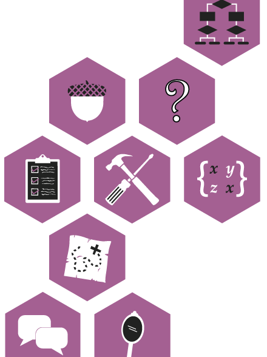

Remake Learning Competencies
These shared competencies were developed through a community process led by The Sprout Fund with the generous support of The Hillman Foundation.
These shared competencies were developed through a community process led by The Sprout Fund with the generous support of The Hillman Foundation.
Competencies are specific and observable learning outcomes. The goal of competency-based learning is to ensure that students are able to demonstrate knowledge, skills, and dispositions that are important to success in school, higher education, careers, and life.
The Remake Learning Competencies form the foundation of learning pathways that connect students to opportunities offered by schools, afterschool programs, cultural organizations, and online learning resources. By working together across boundaries, organizations offering learning experiences—in school, out of school, and online—can create pathways to opportunity for all students.
From September 2014 to February 2015, members of the Remake Learning Network in Pittsburgh worked together to establish shared learning competencies in conjunction with the creation of a city-wide digital badge and experience discovery platform, Pittsburgh City of Learning.
Cities of Learning is a national movement to harness the assets of a community and transform it into a network of seamless pathways of in-school, out-of-school, and online experiences—enabling young people to explore their interests, develop new skills, and connect their learning to real world opportunities.
The competencies were developed through the active engagement of more than 100 local subject matter experts, informal and formal educators, youth workers, and program managers. Multiple meetings, led by a team of trained facilitators, harnessed the diverse knowledge and expertise of these community members. The results are organized into 7 centers of programmatic excellence within the Pittsburgh community: Career Readiness, Coding & Gaming, Design & Making, Media Making, Robotics, STEAM, and Early Childhood Education. An eighth working group was convened to craft an outreach strategy for raising awareness about digital badges among learners, teachers, parents, and stakeholders.
In addition to the expert-led working group process, the competencies received feedback through a large-scale, half-day-long public forum attended by more than 300 educators and 100 high school students and through a final round of digital surveys. At the conclusion of the process, professional writers edited the competencies to ensure consistency in language and tone and graphic designers created visual representations to accompany each competency.
In 2015, these competencies will serve as the foundation for dozens of community partners joining Pittsburgh City of Learning as they create individual knowledge, skill, and disposition badges for their unique programs. Next, Remake Learning seeks to construct a network map of shared competencies in innovative learning programs, digital badges that are used to recognize learning and achievement, and in-person and online experiences that cultivate these competencies in young people in the greater Pittsburgh region.
By broadly sharing both the final competencies as well as the process undertaken by educators to yield them, it is hoped that other communities implementing local badge systems will benefit from Pittsburgh’s prior work and pursue their own community conversations informed by this experience.
This work was made possible through the generous support of the Henry L. Hillman Foundation Opportunity Fund and led by the staff of The Sprout Fund, which serves as the steward of the Remake Learning Network, Hive Learning Network, and City of Learning in Pittsburgh.
The following terms are used throughout this web page. We've defined them here to provide readers with a clear understanding of what we mean when we use them.
Although developed independently, several working groups arrived at the same or similar competencies, many of which connect to 21st century learning and innovation skills recognized by the Partnership for 21st Century Learning.
The learner works amicably with others to overcome conflicts and differences of opinion to develop work products and solve problems. The learner recognizes individual strengths and weaknesses and different leadership styles.
The learner communicates clearly with peers, mentors, and others about concepts, goals, decisions, and processes.
The learner is curious about what the artist was thinking when crafting a work. The learner constructively critiques the media product to better deliver the message, and is open to constructive criticism of personal work.
The learner understands the process of design planning, objective analysis, iteration, and analytic design breakdown.
The learner demonstrates the ability to understand the feelings of others and knows that others may have different goals and objectives.
The learner is open to constructive criticism, unexpected ideas, new ways of thinking, and growth. The learner is willing to re-evaluate personal ideas and opinions when faced with new information.
The learner works through challenges and does not give up when obstacles are encountered. The learner applies knowledge gained from failures to future endeavors.
The learner takes an initial concept through the design and prototyping process in order to build a completed product.
The learner effectively poses research questions, gathers resources, analyzes and interprets information, and forms connections between ideas. The learner uses this process to tell an accurate and compelling story.
The learner demonstrates a purposeful and strategic approach to future work. The learner has a specific interest in acquiring a difficult and economically valuable skill.
Career Readiness includes leadership development, people skills, personal wellness, job preparation, entrepreneurship, finance, technology, and positive habits.
Download the Career Readiness Competencies Poster
The learner understands foundational business principles including value propositions, managing a team, profit margins, and business planning.
The learner understands cross-cultural relationships and collaborates with people of other cultures with humility and empathy.
The learner understands traditional financial tools such as checking accounts, savings accounts, investments, interest rates, and retirement accounts as well as technologies like online banking and digitally secure payments.
The learner understands the purpose of the hardware components of a computer, the different layers of code that make computers function, and how the web works.
The learner conducts self-assessments to identify points of stress in life and resolves stress in healthy and appropriate ways.
The learner actively considers options and makes healthy choices regarding diet, exercise habits, and workplace routines.
The learner uses human-centered design methods to research, form ideas, problem-solve, iterate, communicate, receive feedback, and prototype.
The learner provides guidance and care to another person through a constructive relationship by exhibiting behaviors such as offering advice, sharing knowledge, or increasing exposure to opportunities.
The learner effectively poses research questions, gathers resources, analyzes and interprets information, and forms connections between ideas. The learner uses this process to tell an accurate and compelling story.
The learner demonstrates a purposeful and strategic approach to future work. The learner has a specific interest in acquiring a difficult and economically valuable skill.
The learner works amicably with others to overcome conflicts and differences of opinion to develop work products and solve problems. The learner recognizes individual strengths and weaknesses and different leadership styles.
The learner appreciates the personal and global importance of giving. The learner demonstrates empathy and a willingness to sacrifice in order to help others.
Coding & Gaming focuses on developing technical skills in computer programming, application and game development, as well as creative competencies in game design, animation, and storytelling
Download the Coding & Gaming Competencies Poster
The learner identifies general coding and gaming concepts such as strengths and weaknesses of different coding languages as well as the characteristics of different game genres.
The learner understands the core aspects of interactive design, including usability, art direction, game design, and development.
The learner understands different ways to publish a completed product in order to maximize its reach among different audiences.
The learner understands the different types of roles associated with developing and designing digital projects and products.
The learner understands the roles that individual components play when connected together and combines those components to produce a functioning system.
The learner communicates clearly with peers, mentors, and others about concepts, goals, decisions, and processes.
The learner analyzes and deconstructs existing digital products in order to learn new methods or find inspiration for personal work.
The learner uses an iterative process, including user testing, to evaluate and revise a project in development.
The learner takes an initial concept through the design and prototyping process in order to build a completed product.
The learner works amicably with others to overcome conflicts and differences of opinion to develop work products and solve problems. The learner recognizes individual strengths and weaknesses and different leadership styles.
The learner demonstrates the ability to understand the feelings of others and knows that others may have different goals and objectives.
The learner experiments by repurposing materials, modifying existing products, or combining components in novel and surprising ways.
The learner is open to constructive criticism, unexpected ideas, new ways of thinking, and growth. The learner is willing to re-evaluate personal ideas and opinions when faced with new information.
The learner works through challenges and does not give up when obstacles are encountered. The learner applies knowledge gained from failures to future endeavors.
Design & Making is the creative process of imagining an idea, researching the user, designing a concept, choosing materials, practicing technique, fabricating prototypes, and interpreting the built environment.
Download the Design & Making Competencies Poster
The learner understands the design process of brainstorming, ideation, prototyping, and testing and knows specific design methods and techniques.
The learner identifies and understands pathways to opportunities that allow for personal, professional, or academic growth.
The learner understands the importance of questions in the maker process and identifies what questions to ask, who to ask, and how to research and find answers to questions.
The learner knows and respects the rules, policies, procedures, and routines of the space.
The learner knows the properties, characteristics, and sustainability of different materials and identifies which are best-suited to achieve the intended goals.
The learner predicts and anticipates the potential social, financial, and environmental consequences of a given design or making.
The learner assesses what materials, procedures, and supports are necessary to accomplish the intended goal and formulates a plan to gather the necessary components, both material and immaterial, accordingly.
The learner communicates clearly with peers, mentors, and others about concepts, goals, decisions, and processes.
The learner pauses to self-evaluate during the design process. The learner connects the effect of design to his or her life and the world at large.
The learner demonstrates the ability to understand the feelings of others and knows that others may have different goals and objectives.
The learner is open to constructive criticism, unexpected ideas, new ways of thinking, and growth. The learner is willing to re-evaluate personal ideas and opinions when faced with new information.
The learner works through challenges and does not give up when obstacles are encountered. The learner applies knowledge gained from failures to future endeavors.
The learner plays with, tinkers with, and explores materials, methods, and ideas in a joyful manner.
The learner appreciates the lessons learned while making the product in addition to valuing the final product itself.
Early Childhood Education competencies for teachers working with young children include the use of technology, activity planning, and pedagogical approaches.
Download the Early Childhood Education Competencies Poster
The educator understands STEAM learning principles, recognizes why these principles are important in early childhood education, and actively seeks opportunities to integrate these principles into everyday learning.
The educator understands research about developmentally-appropriate practice such as the “Technology and Interactive Media as Tools in Early Childhood Programs” Position Statement issued by NAEYC and the Fred Rogers Center.
The educator activates, deactivates, and charges common tech devices. The educator maintains devices by performing tasks such as regularly updating software and anti-virus protection. The educator connects to the Internet and uses the web.
The educator finds, accesses, and registers for learning opportunities through Pennsylvania Keys and other professional development resources.
The educator uses iOS or Android mobile devices safely, securely, and appropriately for functions like taking pictures, recording video, using apps, sending email, and sharing content via social media.
The educator uses email systems, word processing programs, spreadsheet programs, and presentation software to perform basic office functions.
The educator uses cloud-based tools such as Google Apps to create online spaces for sharing information and collaborating with parents, educators, and children.
The educator practices ethical digital citizenship and can use applications like group messaging to engage and communicate effectively with parents and caregivers.
The educator uses technology for effective play-based learning and actively seeks opportunities to embed STEAM concepts into classroom practice.
The educator accesses useful and credible resources online and uses information from these resources in the learning environment.
The educator communicates the need for and value of technology and digital literacy to parents, caregivers, and administrators. The educator identifies ways of increasing access to technology tools.
The educator fosters emerging and early digital literacy skills in young children and connects these skills to everyday learning experiences.
Media Making includes the production of mass communication, including television, radio, print, digital design, imagery and video, and diverse web-based communications mechanisms.
Download the Media Making Competencies Poster
The learner understands procedures for operating and caring for equipment native to the medium.
The learner understands the strengths and weaknesses of different forms of media and selects the most powerful form to deliver a given message.
The learner understands multiple media avenues for distribution, including radio, television, digital and social media, art shows, and festivals.
The learner knows how to tell an engaging story and identifies key concepts that make stories interesting to a variety of audiences.
The learner offers an evidence-based interpretation of the intended and unintended messages in media. The learner takes a position in relation to these messages.
The learner critically evaluates personal work and makes informed decisions to improve it by making it more expressive, articulating the message more clearly, or better fitting it within the constraints of the medium.
The learner formulates relevant ideas and messages, evaluates the viability of these ideas, and articulates the reasons for arriving at those ideas.
The learner gathers content, conducts interviews, follows leads, and utilizes and cites quality sources.
The learner effectively poses research questions, gathers resources, analyzes and interprets information, and forms connections between ideas. The learner uses this process to tell an accurate and compelling story.
The learner works amicably with others to overcome conflicts and differences of opinion to develop work products and solve problems. The learner recognizes individual strengths and weaknesses and different leadership styles.
The learner is curious about what the artist was thinking when crafting a work. The learner constructively critiques the media product to better deliver the message, and is open to constructive criticism of personal work.
The learner exhibits a change in the way they see themselves with respect to the work they make.
The learner exhibits eagerness to express his or her voice and understands how media is used to effect social change.
The learner passes on knowledge they have learned and accumulated when others need help.
Robotics combines technical training in computer programming, fabrication, and electronics with design-thinking, iterative problem-solving, and communication.
Download the Robotics Competencies Poster
The learner understands the purposes of basic electronics components, circuit theory, schematic symbols and drawings, and evaluates manufacturing feasibility.
The learner understands the process of design planning, objective analysis, iteration, and analytic design breakdown.
The learner understands basic mechanical components and measurement units. The learner also knows the properties of various tools and the physical characteristics of different materials.
The learner understands the syntax, functions, and libraries of a given specific programming language such as Scratch, C++, Python, or Java. The learner programs basic algorithms and evaluates program correctness.
The learner identifies parts of a robot as part of a larger system. The learner analyzes block diagrams of abstracted systems and understands the interactions between subsystems.
The learner assembles a circuit board safely, fully, and according to a design plan, using required tools and processes.
The learner communicates clearly with peers, mentors, and others about concepts, goals, decisions, and processes.
The learner identifies a set of human needs and, given the appropriate social robot, designs and implements an appropriate human-robot interaction.
The learner uses required design tools such as simple mechanical and electronic CAD software to fully design a robot from scratch, including mechanical, electrical, and software systems.
The learner investigates and explains how automation affects cultures and the world.
The learner uses required tools and processes like 3D printing, precision machining, and welding to fabricate all components of a robot and assembles those components into a working system.
The learner formulates a robot behavior plan including scripted actions and feedback response, programs a working robot to implement said plan, and develops test procedures for evaluating the robot’s performance.
The learner works amicably with others to overcome conflicts and differences of opinion to develop work products and solve problems. The learner recognizes individual strengths and weaknesses and different leadership styles.
STEAM purposefully incorporates elements of multiple disciplines—especially in the arts and sciences—in order to develop learners who can address the complexity of real-world problems.
Download the STEAM Competencies Poster
The learner understands how specific scientific or artistic developments impact humans and describes how love, loss, and purpose motivate scientific and artistic exploration.
The learner understands the roles individual components play when connected together and combines those components to produce a functioning system.
The learner communicates clearly with peers, mentors, and others about concepts, goals, decisions, and processes.
The learner properly identifies, collects, and evaluates data relevant to solving or understanding a specific problem.
The learner utilizes, applies, and recalls prior knowledge, concepts, and experiences and applies them to new endeavors.
The learner identifies challenges, brainstorms solutions, and applies specific methods and knowledge from multiple disciplines to efficiently solve problems depending on the context.
The learner utilizes multidisciplinary making skills to execute ideas and designs. The learner uses age-appropriate methods to create or build a final piece or product.
The learner adopts useful habits of mind and mitigates unproductive behaviors.
The learner works amicably with others to overcome conflicts and differences of opinion to develop work products and solve problems. The learner recognizes individual strengths and weaknesses and different leadership styles.
The learner receives and understands constructive criticism and uses it to improve the next iteration of ideas, concepts, or products.
The learner demonstrates a willingness and eagerness to experiment with a variety of materials, exploring both form and function, to understand their physical properties and imagine their potential for innovation.
The learner frequently seeks appropriate feedback throughout the learning experience in order to properly gauge the development of new knowledge, skills, products, or outcomes.
The learner is open to constructive criticism, unexpected ideas, new ways of thinking, and growth. The learner is willing to re-evaluate personal ideas and opinions when faced with new information.
The learner works through challenges and does not give up when obstacles are encountered. The learner applies knowledge gained from failures to future endeavors.
This documentation was compiled to illuminate the process used in the Pittsburgh region to build momentum for digital badges that recognize learning and achievement. It describes the working group process used to develop shared competencies and example learning pathways as well as other non-technical aspects of the Pittsburgh City of Learning initiative from summer 2014 through early 2015.
We have included descriptions of the key steps in our process and discussion about why we pursued these steps, what we were trying to achieve, and the barriers to success or failures in implementation that emerged along the way. This documentation makes explicit reference to manuals, templates, and artifacts of our process that are aggregated in the Downloads section of this webpage or linked externally.
Our methodology is divided into 8 sections:
We hope that this information will enable other cities to design authentic, local approaches for establishing city-wide learning competencies and prepare program designers to create knowledge, skill, and disposition digital badges.
It is our expectation that much of what worked in Pittsburgh may work well in your city too, but we encourage you to adjust the process to suit the needs and opportunities present in your community. Don’t hesitate to contact us if you would like to discuss our experience!
Build momentum for digital badges by leveraging prior success—locally, if exemplars are available, and nationally by connecting with people and organizations that are part of the Cities of Learning and Open Badges movements.
We hosted a 2-hour launch event for the initiative on the evening of June 10, 2014. We partnered with Carlow University and selected a location on its campus that included both theater seating for presentations and a space for a post-event reception.
We opened the event by showing a short introductory video explaining to the assembled audience “What is a Badge?” and how they can be used by badge earners to recognize their learning and share their achievements in places that matter. The video was created by the Chicago Art Department, a nonprofit media company deeply involved in documenting community learning programs.
We were able to bring national leaders to speak at the event, including Dr. Nichole Pinkard of the Digital Youth Network and DePaul University, Erin Knight of the Badge Alliance, and Jennifer Humke of the MacArthur Foundation.
Locally, we invited a representative from the Mayor’s Office, Dr. Curtiss Porter, to speak about the City of Pittsburgh’s commitment to innovation and the value of neighborhood-based approaches to learning.
The Sprout Fund staffer leading the community process, Khalif Ali, reviewed 3 badges created by the Carnegie Library of Pittsburgh’s Labs @ CLP teen program to illustrate the differences between the 3 types of competencies: knowledge, skills, and dispositions:
In addition, Ali provided an overview of the steps involved in the working group process and encouraged attendees to use a Google Form to express interest in joining a group. (At the time, we did not have the schedule of working group meetings fully mapped out, but, if that had been complete, it would have been an important component of his presentation.)
Lastly, Sprout’s Executive Director, Cathy Lewis Long, gave opening and closing remarks and acted as the event emcee for the evening.
After the speakers concluded, the second half of the event featured a reception with light food, beverages, and opportunities for networking.
More than 150 people attended the launch event. It generated substantial excitement and enthusiasm. In the weeks that followed the event, many people expressed interest in becoming working group members or otherwise contacted us to learn more about how they could contribute to the initiative.
Originally, we had intended an initial “quiet period” of small meetings and one-on-one conversations to better understand the local landscape for digital badges and assess the attitudes and perceptions of local stakeholders. We had considered conducting surveys or focus groups with network members to determine the local resources already available or that could be made to be readily available to bring digital badges to Pittsburgh.
We shared the prior efforts of the Carnegie Library of Pittsburgh as a tangible example of badges already in action in our community. This helped us ground the complex, conceptual framework of digital badges in a real-world learning experience and show how badges capture and recognize important learning outcomes.
In terms of the people we invited to speak, we tried to balance national and local perspectives to make a convincing case to stakeholders that the effort has merit beyond the boundaries of the community but is also doable by members of the community.
Identify enthusiastic educators and learning professionals with subject matter expertise and secure their commitments to participate in a multi-month working group process. Describe the planned activities and introduce the team helping to lead your local efforts.
We sought to recruit 10–15 members per working group. We set this benchmark to assure that at least 7 working group members would be available to attend each scheduled meeting in person. (Additionally, using Basecamp as a project management platform, we created opportunities for online feedback in instances where members could not attend meetings in-person.)
Very early in the process, we chose to constrain the focus of our efforts to focus areas that were already deemed center of excellence in our community. By this we mean that there was a density of learning activities and educators available to participate in the community process and that the results of the efforts would immediately benefit many local learning programs.
In Pittsburgh, the 7 areas selected were Career Readiness, Coding & Gaming, Design & Making, Early Childhood Education, Media Making, Robotics, and STEAM. (An eighth group, focused on advocacy and awareness-building, did not focus on a content area but rather the messages and approaches necessary to assure widespread adoption of digital badges and competency-based approaches to recognizing learning and achievement.)
We identified more than 160 potential candidates by:
Using an email merge, personal invitations were sent to each candidate inviting them to join the working group to which their expertise was most closely aligned.
The initial round of messages were sent by the lead staff person for the working group process. However, because that staff person was new to the organization and to some of the candidates being recruited, personal follow-up messages to non-respondents were also sent from more senior staff. Although both messages were automatically generated by a mail merge, they were personalized and sent from a real person’s email account to assure that the messages received due consideration by the recipient.
We sent an invitation to attend an orientation session to the working group members that replied affirmatively. Sessions were offered on two different days (Friday and Tuesday) and at two different times of day (morning and evening) to try to accommodate the complex schedules of more than 100 busy professionals.
At the orientation session, we provided attendees with background information about the theory of digital badges and introduced them to our vision of a city-wide platform for recognizing achievement and discovering learning experiences. We discussed the key steps in the working group process and described the roles of our staff and facilitators to help the groups achieve their ambitious objectives.
Of the 160 candidates asked to participate in the working groups, 112 initially committed to be part of the process. (Six months later, at the end of the process, the groups included 93 members—a retention rate of 83%.) Many others that were unable to fully commit to participation offered to stay informally involved as advisors to be called upon as needed or, in the final stages of the work, to review the outputs of the working groups through a digital survey.
By offering 2 orientation opportunities, we were able to introduce 80% of working group members to the process during just these sessions—substantially reducing the number of one-on-one orientation conversations that had to occur between working group members and program staff.
In Pittsburgh, we leveraged the strength of the Remake Learning and Hive Learning networks to assist in recruitment. If your city doesn’t have established networks like ours, identify other important cultural and learning organizations and reach out to them for recommendations. It is important to begin this work by soliciting support from both small and large organizations with a stake in your city’s education system.
We also referenced the types of organizations which joined in the Cities of Learning campaign, the kinds of learning experiences that they selected to badge, and the experiences and excitement of the involved educators who recognized that badges were a powerful way to conceptualize connected learning experiences.
Ideally, the recruitment period for the working groups should have occupied no more than 1 month after the launch event, but the working groups instead began in September instead of July. Although this was partly due to staffing constraints, we made the decision to delay our start since prior program experience suggested few successful efforts can meaningful launch in the middle of summer. The benefit of this delay was that there was extra time available for recruitment.
Extra hands can help lighten the burden on staff and make sure your working groups stay on-time and on-track.
We trained 1 facilitator to assist with the management of each working group. The facilitators were responsible for independently organizing each of 4 working group meetings and regularly reporting back on the results of the process. The facilitators augmented our staff capacity and, as our representatives in the room, enabled us to be “present” at every one of the 27 working group meetings. As independent contractors, the facilitators received compensation for their services (approx. $4,000 USD each) with a series of partial payments tied to their working groups’ deliverables.
At a training session for facilitators (which occurred prior to the orientation session for working group members), we took a deep dive into the world of competencies and badges and outlined our expectations for the working group process. Using a training manual as a guide, we walked through all of the anticipated aspects of the process, hinted at some of the bumps in the road that we expected, answered questions, and clarified concepts so that each trained facilitator was fully equipped to successfully guide their working group. The manual contained relevant definitions, a calendar of events, and blueprints for each meeting as well as tips and tricks for successful facilitation—although most facilitators had prior relevant experience leading meetings and similar groups.
We matched facilitators to working groups principally based on prior content expertise and overall experience in facilitation. The facilitators attended both orientation sessions so that working group members could put faces to names and to help the facilitators schedule the first official meetings of the groups.
We recruited 7 facilitators that had done work for us previously, all of whom were part of the 20-person facilitation team we assembled for the national Open Badges Summit to Reconnect Learning in Silicon Valley in February 2014. The eighth facilitator was referred to us by another organization. All facilitators fully participated in the training process and attended the orientation sessions.
We chose to compensate our facilitators and had them each sign contracts outlining their responsibilities, deliverables, and payment schedule to make clear our expectations. In many ways, we relied on the facilitators as additional program staff; beyond leading and scheduling meetings they were responsible for filing regular reports, typing up meeting outputs (e.g., transcribing Post-It notes), and summarizing results so that they could be infused into the next step in the process.
If funding isn’t available for facilitators, you might also consider appointing chairpersons for each working group to lead the meetings and assigning other staff to handle logistics and transcribe meeting outputs. However you choose to proceed, remember that managing a working group process is both time- and labor-intensive, so it is necessary to plan accordingly.
We engaged facilitators who had previously done work for our organization or who were recommended to us by colleagues in the community. Although all were working professionals, only 1 might be considered a professional facilitator. We’ve had tremendous success over the years building a network of thoughtful community members equipped with essential facilitation techniques. We create highly-documented meeting guides and training manuals that enable them to attend a prep session with our staff and then step forward as process experts. In seeking out new potential facilitators, we look at former project managers, committee members, and professional colleagues. Prior experience with facilitation is desirable but not necessarily required.
Convene subject-matter experts who can speak to the topic at hand. Be sure to include people with diverse backgrounds, expertise, and experience. Clearly communicate goals and expectations to working group members from the outset.
We convened 3 meetings of each working group with specific goals and objectives for each of 2-hour session. The meetings happened every 3–4 weeks on a schedule and at places determined by working group members themselves. Facilitators sent meeting reminders and prepared a custom meeting agenda based on templates that we provided them.
The first meeting identified an initial set of competencies relevant to the group’s focus area and began categorizing them according to level (beginner, intermediate, advanced) and type (knowledge, skill, and disposition).
The second meeting focused on developing corresponding evidence for the competencies that were articulated during the first meeting. We encouraged the working groups to make evidentiary arguments about the competencies and how the learning could be demonstrated.
The third meeting was designed to help the group develop prospective learning pathways, that is, actual events and activities that students could attend in our city related to their working group focus area.
After each meeting, facilitators were asked to complete a meeting summary describing their progress and experience with the group. A Google Form was created to allow facilitators to easily record their feedback in one place and send it to us for review. The feedback from facilitators was used to adapt the process in real-time and allowed staff and facilitators to adjust the process based on varying levels of progress toward the stated goals.
All 7 groups met 3 times between September and November 2014. However, it quickly became clear following the first meeting that most of the group’s would need additional time to fully develop their initial list of competencies. As a result, a large portion of each group’s first and second meetings were spent brainstorming competencies and refining them into a manageable set of core ideas. By the third meeting, most groups had solidified a preliminary set of competencies, with descriptions, that were ready for public feedback and had moved on to discussing evidence and learning pathways.
The working groups successfully identified the core competencies relevant to each focus area. However, things don’t always go exactly as planned.
Specifically, we underestimated the amount of time that was required for the groups to come to consensus about the most important competencies within their domain. In fact, it took most groups twice as long as we originally anticipated (2 meetings instead of 1). Yet, while the process took considerably longer than we thought, it was extremely valuable to allow each group to move at its own pace to ensure that all voices were being heard and that good ideas were not being left behind in a rush to stay on schedule.
Relatedly, the value of developing shared language was immediately recognized by us and many working group members. Precise and accurate use of language is critical to understanding. However, many people use the same words to mean different things. The facilitators had to use finely-tuned listening skills and carefully-honed questioning techniques to help working group members clarify what they meant by certain phrases in order to allow the group to rally around mutually-agreeable language. We recommend creating and sharing a glossary of terms at the beginning of a process and updating it throughout the course of the initiative.
Another important lesson we learned was that the groups had difficulty placing the competencies into levels. Our original conception was that each competency could be identified as Beginner, Intermediate, or Advanced. However, many working group members struggled to categorize the competencies in such a way. The primary argument against doing so was that many competencies could be conceived of as having beginning, intermediate, and advanced components. Instead of creating a linear path of scoped and sequenced competencies (for example, Collaboration should be demonstrated before Empathy and then be followed by Communication), the groups opted to identify important competencies that could be sequenced at a later date by a program providers based on their specific context.
Another significant finding was that it proved difficult for the groups to develop evidence in the abstract. Put another way, it’s much easier to identify evidence of learning within the confines of a particular program or set of activities. While it was our initial intention to publish example evidence alongside each competency, we were unable to meet this goal because the groups chose to defer this responsibility to program providers because only they would be familiar enough with the specific learning activities to describe the evidence that demonstrates that a competency has been learned.
With regard to the development of learning pathways, three things are worth sharing: (1) the notion of learning pathways resonates with lots of people, (2) learning pathways should be conceived of by stakeholders that are very knowledgeable of the local learning landscape, and (3) there is a need to incentivize inter-organizational collaboration.
The goal of creating citywide (or even region-wide) learning pathways for students was the “North Star” for many of the working group members that participated in our process. While digital badges and micro-credentials are inherently intriguing to some, their true power may lay in their ability to light up learning pathways for students—to make disconnected, but related, learning opportunities more visible, connected, and accessible to a wide range of learners.
People that wish to design learning pathways must have a deep knowledge of the local learning environment. For example, when considering Media Making pathways in your community, be sure to engage with major and minor stakeholders working within that domain to help identify relevant learning experiences that build on one another.
We witnessed a real need for educators to think beyond their organizational borders when designing programs and activities for young people. In order for students to take advantage of all the learning experiences that a place has to offer, organizations offering educational programming in that place need to actively design programs that cross organizational boundaries. We recommend identifying ways to incentivize the creation and promotion of cross-organizational opportunities that allow students to level-up from one learning experience to the next as they traverse the local terrain.
Build momentum for digital badges in your community by hosting free, public events that help raise awareness of the importance of micro-credentials. Keep public dialogue alive by regularly assembling both newcomers and key stakeholders to discuss emerging trends and learn from experts.
As a parallel activity to the working group process, we hosted awareness-building events to engage a larger audience in public dialogue about digital badges. These sessions were designed to stimulate conversations among the audience and provoke people to think about incorporating digital badges into their own work. Each session was designed to discuss a different topic, so that attendees could learn new aspects of digital badging. Most of the speakers were drawn from the local community, but we also brought in a national partner for 1 of the events.
During this period, we hosted 4 awareness-building events—roughly 1 every other month. In total, 168 people attended the events:
These events created regular, ongoing opportunities for people to participate in conversations about digital badges. Less the travel costs incurred to bring in a national speaker, these events were held for the cost of breakfast or coffee. Many venues donated their space for us to use free of charge and the speakers donated their time and effort. Small-scale awareness building events are a great way to develop a community of people interested in digital badges, relative to the effort and expense associated with hosting them.
Host a large-scale public event in order to engage a broad swath of people and garner feedback on the work products being developed by the working groups.
We held a large public forum to accomplish two primary goals: (1) raise awareness of digital badges and the working group process, and (2) solicit feedback on the working groups’ preliminary outcomes. The event, which became known as the Pittsburgh Learning Pathways Summit, accomplished both of these goals.
This free, town hall-style meeting was created for teachers, students, mentors, and others to explore ways to connect in-school and out-of-school learning experiences and create new pathways to opportunity for students in the greater Pittsburgh region.
The event introduced a large audience to the concept of digital badges and enabled the working groups to get public feedback on their initial ideas about how Pittsburgh can build a more connected learning ecosystem. The summit was a means by which in-school and out-of-school learning professionals could jointly contribute to the development of shared competencies.
A great amount of care and attention was devoted to creating an engaging, inspiring atmosphere that maximized participation on behalf of participants. Staff worked alongside a part-time consultant to design and implement the event. The consultant spent approximately 5 months planning the Summit.
The event featured a mixture of remarks from stage, panel discussions, table-based facilitation activities, science fair-style feedback stations, and an enthusiastic emcee. We worked with all speakers in advance to prepare them for their role at the event—including drafting talking points as needed. We designed and built a slidedeck for the event and worked with an A/V team to use multimedia at several points throughout the day.
We recruited 35 people to be discussion moderators spread out among 70 tables of 6–8 attendees. Working group members and facilitators helped lead the afternoon feedback stations to capture input about the preliminary list of competencies devised by each group.
In order to document the day, we created a “storytelling station” and utilized a videography team to capture the Summit in through pictures, film, and audio.
The outreach strategy for the summit had three elements: (1) utilize existing contacts and networks, (2) encourage working group members to spread the word, and (3) focus intense effort on recruiting participation by schools and students. We asked existing partners and working group members to share information about the summit with potential attendees—a letter was drafted to make it easy for them to invite colleagues—and we reached out to nearly every principal within the local school districts as well as through our regional education service agencies.
Finally, we reached even more people than just those that were present at the event through a coordinated social media strategy that included an on-site public relations professional from a national firm and multiple specific encouragements for attendees to share their thoughts, feedback, and pictures socially.
The Pittsburgh Learning Pathways Summit was held on Friday, November 21, 2014, at the David L. Lawrence Convention Center. More than 300 educators and other learning professionals joined approximately 100 students to represent 36 distinct school districts or charter organizations.
The majority of attendees were from the greater Pittsburgh region but a few came from as far away as Chicago, Colorado, Dallas, and Iowa. Emmai Alaquiva, an Emmy Award-winning music producer and former Remake Learning Network project manager was the event’s energetic emcee.
The event hastag #LearningPathways was used in 1,112 tweets by 217 unique contributors during the event or in the days immediately following it. In total, our social media efforts reached 260,082 user accounts and the hashtag had 2,325,002 impressions, according to data collected through Union Metrics TweetReach.
The Summit was a resounding success, due in no small part to several strategic decisions we made with regard to the event’s design and implementation.
First off, let’s begin with the importance of branding and marketing. We debated long and hard about the name of the event. Ultimately, we settled on the Pittsburgh Learning Pathways Summit, in lieu of something more focused on digital badges or competencies. To pick a name, we used a simple but effective technique. We gathered decisionmakers in a room, provided an overview of the goals for the event, gave everyone a stack of Post-It notes, and invited people to silently write down as many naming options as possible. Then, once everyone was finished, we categorized the post-its using the affinity clustering technique and considered the options until we landed on the Pittsburgh Learning Pathways Summit—a name that spoke to our geography (Pittsburgh), the topic of the event (Learning Pathways), and carried enough weight to convey the importance of the event (Summit). Generating ideas individually, before discussing them as a group can be a powerful thought exercise.
Another important logistical decision related to the timing of the event: a Friday from 8am to 2pm. We decided to have it on a school day because we were worried about our ability to attract teachers and students on a busy fall weekend. We made a conscious choice to invest in outreach, especially to schools and students, to ensure that we would have good attendance. Many hours were spent emailing and calling both formal and informal educators, including the principal of every local city school, to encourage their participation. Additionally, we offered to pay for the cost of a substitute teachers so that educators and students could attend the event. Although only 5 districts took us up on the offer (resulting in less than $1,900 in expense), this gamble paid off as we were able to attract more than 400 people to the event, including 100 students. Having students at the event was critical.
From a programming perspective, it was important to mix speaking from stage with roundtable discussions and workshops. Throughout the day, we alternated between stage presentations and table discussion moderated by trained facilitators. This approach was successful because there was never more than 15 minutes of talking by any one person from the stage at any given time—even the keynote address was only 15 minutes long.
A huge positive takeaway was the decision to feature students during one of the panel discussions. We partnered with a local nonprofit organization that leads an environmental summer program for teens to highlight the work they had done with digital badges. It was enlightening and entertaining to hear students speak from their experience—and it helped ground the discussion in reality. Too often discussions about education forgo the voice of students.
Another highlight of the event was a series of Ignite Talks that featured 1 speaker from each of the 7 working groups. Each speaker was given up to 5 minutes to portray to the audience their excitement about the working group process. The talks were decidedly not meant to be a pedantic summary of each Working Group meeting up to that point, but, rather, an enthusiastic expression of how badges and learning pathways relate to their chosen focus area. To help each group’s representative prepare for their talk, we enlisted the support of two people: Rob Zellers, a longtime theater coach at Pittsburgh Public Theater and Margaret Krauss, a Pittsburgh-based storyteller and podcaster. For $200 USD each, they were willing to spend several hours listening to rehearsals and critiquing the presenters in order to make sure that both their content and delivery were as good as possible for the live event. Their advice was critical to the success of this portion of the summit.
Another important lesson learned is that production value matters. We spent a great deal of time and money putting producing the summit—from leasing a major cultural venue to catering costs to union fees for stagehands—but it was worth it. People quickly forget the content of a keynote address, but it is far more difficult to forget an engaging and inspiring experience. We were thoughtful about little details like playing background music as guests enter the venue and making sure everyone uses the same branding guidelines for their slidedeck and weighed heavily big decisions like having a local personality emcee the event and choosing a notable venue.
It has also been our experience that it is imperative to do a good job documenting the event. If you can afford the cost, having documentary-style photography and videography at the event, as well as creative multimedia documentation like our podcast studio and portrait booth can be very effective ways to convey the character of the event to those who are unable to attend. The rationale for this is built on over a decade of experience working with small, bootstrapping projects. Often times, people leading projects such as these don’t have the resources or wherewithal to document what they are doing as they are doing it—which is a shame because the event only lasts for a few hours, while the video lasts in perpetuity. It is always our recommendation to invest in documentation whenever possible—and if you can’t afford a professional video crew, try working with a local team of students to record, edit, and report on the event!
While we were fortunate to be able to raise resources to put on a high quality public engagement event, that’s not always going to be the case. There are many ways to achieve similar results and host similar events by seeking in-kind support from venues, working with volunteer facilitators, asking speakers to donate their time, and thinking creatively about documentation. The point is, no matter the scale of the event, it is important to create an opportunity for the public to learn about, reflect on, and react to the working group process. Do it in the way that makes the most sense for you—based on time, resources, and your local context.
Revise and review your progress so far and seek opportunities to engage new audiences in the last steps in the process.
We convened a final meeting of all of the working groups after the public forum. In advance of this meeting, we transcribed all of the suggestions, clarifying questions, and general comments gathered during the forum and collated them into a spreadsheet. We analyzed the information that had been collected and shared the common themes across the working groups with the facilitators as well as identified key areas of refinement that each group needed to tackle during their last meeting.
During the final working group meeting, members revised competencies that required modifications and winnowed their lists to final slates of recommendations. The group members also developed 1 example learning pathway to map local organizations and available experiences to the some of the competencies as an illustration as to how knowledge, skills, and dispositions could be cultivated in youth.
Using the refined competency lists submitted by the working groups, we developed an online survey instrument for each focus area. The survey asked the respondents to agree or disagree whether each knowledge, skill, or disposition recommended by the working group was indeed a necessary learning competency in that focus area. Respondents could also agree but recommend their own revisions to the language or terminology. We also prompted them to classify each competency as Beginner, Intermediate, or Advanced. Finally, as summative open-ended questions, we asked how the competencies might be used to help design digital badges and connect learning experiences in-school, out-of-school, and online (i.e., build learning pathways).
We created a landing page on our website to describe the working group process and provide context for each focus area. We published a blog post and social media mentions to announce the survey to our followers and incentivized participation by offering a new piece of learning technology (specifically, a Mozilla Firefox OS phone) as a random drawing from completed survey responses. In addition, we sent personal emails to all working group members and the other subject matter experts that we’d met along the way. The survey was in the field for approximately 2 weeks before we closed it and started to review the responses.
All but one of the working groups were able to convene for a final meeting and to revise their competency lists and model pathways using the feedback gathered at the public forum. The Design & Making group was unable to successfully schedule an in-person meeting, and feedback was instead gathered virtually.
The online survey yielded 85 total responses with a maximum of 22 responses in Early Childhood Education and a minimum of 7 responses in Design & Making; the median response rate was 11.
Respondents agreed that two-thirds of all items surveyed (63 of 95) were important learning competencies, either as written (33 of 63; 52%) or with modifications (30 of 63; 48%). Only 14 competencies had more than one respondent disagree about their importance. Early Childhood Education, which had the largest number of responses, also had the most number of competencies (7 of 14; 50%) with which at least two respondents disagreed. Only the Robotics competencies had no disagreements whatsoever.
Regarding the information collected about competency level (Beginner, Intermediate, or Advanced), this data was less clear. Only 21 of 95 (22%) of the competencies demonstrated a two-thirds majority of respondents that favored assignment to a specific level, most of which were Beginner. 30% (28 of 95) of competencies did not even have a simple majority in favor of a single level. On average, survey respondents scored 42% of competencies as Beginner, 36% as Intermediate, and 22% as Advanced.
Overall, we did not feel that respondents were able to meaningful differentiate the competencies as existing on a spectrum of Beginner, Intermediate, and Advanced. Many respondents commented that within each, there are opportunities for learners to level-up but that the competencies themselves exist in no such hierarchy. This also echoed comments by some working group members during their meetings and in feedback gathered during the public forum. As a consequence, we decided not to assign levels to the competencies when they were published.
We wanted to make sure that there were as many opportunities as possible for different people to engage in the competency development process. The most involved group was clearly the working group members themselves. These experts dedicated many hours both in-person and online to developing and refining the competencies. During the public forum, we explicitly sought the formal and informal educators’ perspectives. Finally, during the survey process anyone else from the Remake Learning Network (and those that follow our work across the country) could weigh in with their opinions and ideas, especially individuals that could not fully commit to working group participation but were nonetheless as just as much experts in their fields. We also shared our progress and the opportunity for feedback with colleagues in other City of Learning communities.
All told, the competencies were developed or reviewed in some fashion by at least 650 people—most of whom have direct professional experience in the relevant focus areas. Most of the changes to the competencies after the public forum involved wordsmithing the language and finalizing their titles. In general, the working groups did not dramatically alter the competencies because of the public forum feedback, rather the comments and ideas collected helped solidify in the minds of most group members that these were indeed shared community competencies. Finally, the survey process was a good last check-in to validate the work that had been done in each focus area. The strong agreement about the necessity of most competencies gave us confidence to publish the results and share them as representing the full “sense of the Network” in these focus areas.
Share your findings with local and national audiences. Take advantage of near-term opportunities to put the outputs into immediate use. Begin planning for future directions of similar research. Contribute your results and lessons learned openly to others pursuing similar goals and objectives.
In advance of publication, we contracted with a technical writer to develop consistent, active language for each competency based on the final submissions from the working groups and the comments and feedback gathered by the surveys. During this process, we also “harmonized” demonstrably similar cross-cutting competencies that appeared in multiple working groups, combining ideas when possible to create identical descriptions, or, at a minimum, providing them with the same competency name.
We used uniformity in tense and sentence structure to model how competency-based digital badges should clearly differentiate between knowledge, skills, and dispositions:
In addition, we hired an artist to create a representative visual icon for each competency and a graphic designer to create a poster for each competency focus area. During the same time, we also finalized our extensive explanation of the goals, activities, results, and lessons learned of the major phases of the community process.
With tremendous excitement and enthusiasm, we hosted a celebration event to thank working group members for their hard work and dedication during the 6-month process. We brought printed copies of the posters that could be taken home and also created large mounted versions that were displayed at the event. During short remarks, attendees heard from the lead staff person on the project, a working group member, and a facilitator. The presenters were asked to reflect on their experience and share a story about what they learned during the process or how they planned to use the competencies in the future.
Approximately a week after the celebration event, we officially released the Remake Learning Competencies online. We found an example webpage that effectively convened a large amount of information (specifically the documentation used for the Bootstrap web framework), modified its structure to meet our specific needs, and populated it with the final competency and methodology content. We supported the web publication with a dedicated e-blast to our network, complementary blog post, and through personal emails to key constituents, partners, and supporters.
We chose to publish all of the competencies, downloads, and supporting materials using a Creative Commons Attribution-ShareAlike 4.0 International License to encourage as many people, organizations, and communities to benefit from our work. This means that anyone can share (copy or redistribute it) or adapt (remix, transform, and build upon it—even for commercial purposes) so long as they acknowledge or link back to our original and share any adaptions using the same kind of license.
We expect that many organizations participating in our upcoming community-wide digital badge effort will use these competencies as a starting point for designing high quality badges in these focus areas. We hope to expand the information available in this online resource to include examples of programs that develop these competencies and badges that have been created to recognize them. We would also like to add external links to other similar rubrics and pathways as well as relevant articles, blog posts, and research related to these competencies.
Future versions of this information may be made available through a publically-editable wiki to keep the content up-to-date and increase its utilization as a ready-reference for understanding and recognizing innovative learning competencies—in the Pittsburgh community and across the world.
Community-based projects like this one are only as strong as the community of which they are a part.
Fortunately, Pittsburgh is blessed with an abundance of relentlessly curious and fiercely committed educators. Many people and organizations deserve credit for their generous contributions to this project. Working Group members, facilitators, staff members, designers, and funders worked together to create the Remake Learning Competencies. To everyone that participated, thank you!
The following facilitators and working group members graciously donated their time and expertise to this project.
This project was made possible through the support of the entire board and staff of The Sprout Fund. Special thanks to:
Support for this project was provided by the Henry L. Hillman Foundation Opportunity Fund.
Support for the Remake Learning Network is provided by The Grable Foundation, Claude Worthington Benedum Foundation, John D. and Catherine T. MacArthur Foundation, McCune Foundation, and The Pittsburgh Foundation.
The Sprout Fund is Pittsburgh’s leading agency supporting innovative ideas, catalyzing community change, and making the region a better place to live, work, play, and raise a family. Sprout provides critical financial support for projects and programs in the early stages of development—when just a small amount of investment has the potential to yield big results in the community.
Sprout is the steward of the Remake Learning and Hive Learning Networks in Pittsburgh where it provides catalytic support for new learning initiatives, builds the field through program design and professional development, raises awareness and sharing knowledge through enhanced communications, and tells the story of learning innovation in the region.
Directed by a board of civically engaged leaders, led by its co-founders, supported by a dedicated staff, and with strong relationships to many community organizations and regional stakeholders, Sprout has worked successfully across political and geographic boundaries to make hundreds of community-decided investments in early-stage projects, organizations, innovators, and activities.
Learn more about Sprout and its supported projects at sproutfund.org.
Representing more than 200 organizations, Remake Learning is a professional network of schools, museums, libraries, afterschool programs, community centers, higher education institutions, education technology companies, philanthropies, and civic leaders working together to inspire a generation of lifelong learners in Pittsburgh, West Virginia, and beyond.
With millions of dollars invested, thousands of children engaged, and hundreds of practitioners leading dozens of projects, Remake Learning is yielding tangible results for children and youth in communities throughout the region.
Learn more about the Network and the impact of our work at remakelearning.org.
Jump to a group of downloadable materials:

Combining technical training in computer programming, fabrication, and electronics with design-thinking, iterative problem-solving, and communication

Microsoft Word DOC
This work by The Sprout Fund is licensed under a Creative Commons Attribution-ShareAlike 4.0 International License.

Did you find this work useful? Tweet at @remakelearning or @sproutfund to let us know!
Questions or comments? Contact Matt Hannigan or Dustin Stiver of The Sprout Fund.